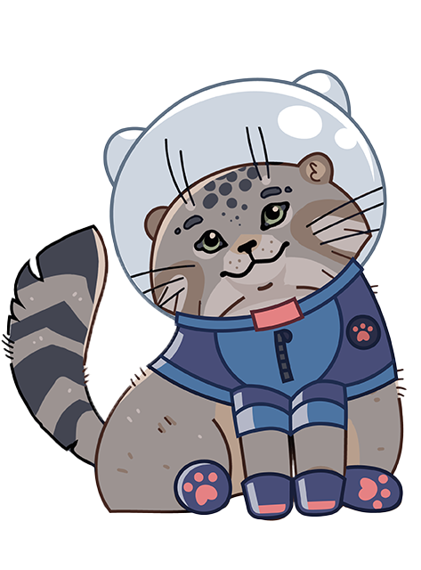

Цифровой ментор
Интеллектуальный анализ учебных и проектных работ

Финик
Ожидает документ
Загрузите работу для анализа
Цифровой ментор оценит структуру, содержание, аргументацию, стиль и сформирует рекомендации.
Перетащите файл сюда
Поддерживаемые форматы: PDF, DOCX
Идет анализ работы
Ментор последовательно проверяет структуру, содержание, стиль и признаки генеративного ИИ.
Итоговая оценка
87 / 100 Работа выполнена на хорошем уровнеКритерии оценки
Сильные стороны работы
Что можно улучшить
Анализ фрагмента документа
Пример точечного замечания к выбранному разделу работы.
Признаки использования генеративного ИИ
Уровень риска: средний
Результат является аналитическим показателем и не может рассматриваться как доказательство использования генеративного ИИ.
План улучшения работы
Приоритеты доработки с ожидаемым эффектом и сложностью.
Как вы хотите улучшить работу?
Выберите направление, чтобы получить подготовленную рекомендацию.
Диалог с цифровым ментором
Ответы демонстрационные и берутся из локальных mock-данных.
О проекте
Локальный интерактивный макет показывает путь пользователя: загрузка работы, имитация анализа, вывод оценки, замечаний, рекомендаций и диалог с цифровым ментором.